聖水・万病 をドロップするmob一覧
一覧ページへ
※状態異常回復1 が該当。
| スプーク | アンデット | セミ1 | |||||||
|---|---|---|---|---|---|---|---|---|---|
 | 投擲(390) | スリング(260) | 状態異常回復1(390) | 腰(220) | 爪(200) | 帰還(160) | |||
| デスピンサー | アンデット | ボス1 | |||||||
 | 投擲(470) | 牙(310) | 状態異常回復1(470) | 鎧(260) | 爪(240) | 帰還(190) | 双剣(310) | ||
| ミイラ | アンデット | 一般2 | |||||||
 | 槍(380) | 杖(250) | 状態異常回復1(380) | 腰(210) | 手首(190) | 能力向上2(150) | 本(250) | 箒(380) | |
| エンバームド | アンデット | 一般4 | |||||||
 | 槍(300) | 鞭(200) | 状態異常回復1(300) | 腰(170) | 手首(150) | 能力向上2(120) | 箒(300) | ||
| マミー | アンデット | セミ1 | |||||||
 | 槍(390) | 杖(260) | 状態異常回復1(390) | 腰(220) | 手首(200) | 能力向上2(160) | 本(260) | 箒(390) | |
| マミーキング | アンデット | ボス1 | |||||||
| 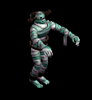 | 槍(470) | 鞭(310) | 状態異常回復1(470) | 腰(260) | 手首(240) | 能力向上2(190) | 箒(470) | ||
| レイス | アンデット | セミ2 | |||||||
 | 杖(420) | 翼(280) | 状態異常回復1(420) | グローブ(230) | 冠(210) | ブローチ(250) | 本(420) | 水晶(280) | |
| 原始人 | 人間 | 一般3 | |||||||
 | 笛(360) | 牙(240) | 状態異常回復1(360) | 足(200) | 槍投擲機(180) | 十字架(70) | 双剣(240) | ||
| イーター | 人間 | セミ1 | |||||||
 | 笛(390) | 牙(260) | 状態異常回復1(390) | グローブ(220) | 槍投擲機(200) | 十字架(80) | 双剣(260) | ||
| 呪術者 | 人間 | ボス1 | |||||||
| 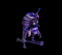 | 笛(470) | 牙(310) | 状態異常回復1(470) | 足(260) | 槍投擲機(240) | 十字架(90) | 双剣(310) | ||
| 斧槍兵 | 人間 | 一般2 | |||||||
 | 槍(380) | 両手剣(250) | 状態異常回復1(380) | 鎧(210) | 手首(190) | 十字架(120) | 鎌(250) | 箒(380) | |
| アイウィング | 悪魔 | 一般3 | |||||||
 | 笛(360) | 翼(240) | 状態異常回復1(360) | 兜・帽子(200) | 冠(180) | 帰還(140) | 水晶(240) | ||
| ドゥームスフィア | 悪魔 | 一般4 | |||||||
 | 笛(300) | 翼(200) | 状態異常回復1(300) | 兜・帽子(170) | 首(150) | 帰還(120) | 水晶(200) | ||
| ビホルダー | 悪魔 | セミ2 | |||||||
 | 投擲(420) | 翼(280) | 状態異常回復1(420) | 兜・帽子(230) | 冠(210) | 帰還(170) | 水晶(280) | ||
| ピエンド | 悪魔 | 一般1 | |||||||
 | 鞭(410) | 杖(270) | 状態異常回復1(410) | 腰(230) | 指輪(210) | 十字架(180) | 本(270) | ||
| サタン | 悪魔 | ボス2 | |||||||
 | 鞭(490) | 杖(330) | 状態異常回復1(490) | 腰(270) | 指輪(250) | 十字架(220) | 本(330) | ||
| オーガチーフ | 悪魔 | セミ1 | |||||||
 | 鈍器(390) | 杖(260) | 状態異常回復1(390) | 鎧(220) | イヤリング(200) | 能力向上1(160) | 本(260) | ||
| ビッグクラブ | 動物 | 一般2 | |||||||
 | 投擲(380) | 両手剣(250) | 状態異常回復1(380) | 足(210) | 指輪(190) | 能力向上2(150) | 鎌(250) | ||
| キングクラブ | 動物 | セミ1 | |||||||
 | 投擲(390) | 両手剣(260) | 状態異常回復1(390) | 足(220) | 指輪(200) | 帰還(160) | 鎌(260) | ||
| キャンサー | 動物 | ボス1 | |||||||
 | 投擲(470) | 両手剣(310) | 状態異常回復1(470) | 腰(260) | 爪(240) | 宝石(190) | 鎌(310) | ||
| ウルフ | 動物 | 一般3 | |||||||
 | 牙(360) | 弓(240) | 状態異常回復1(360) | マント(200) | 槍投擲機(180) | 特殊1(140) | 双剣(360) | 銃(240) | |
| ブラックベアー | 動物 | 一般3 | |||||||
| 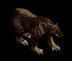 | 牙(360) | 鞭(240) | 状態異常回復1(360) | グローブ(200) | 爪(180) | 宝石(140) | 双剣(360) | ||
| スプークEx | アンデット | セミ1 | |||||||
| 投擲(450) | スリング(300) | 状態異常回復1(450) | 腰(250) | 爪(230) | 帰還(180) | |||
| デスピンサーEx | アンデット | ボス1 | |||||||
| 投擲(1200) | 牙(800) | 状態異常回復1(1200) | 鎧(670) | 爪(600) | 帰還(480) | 双剣(800) | ||
| ミイラEx | アンデット | 一般2 | |||||||
| 槍(380) | 杖(250) | 状態異常回復1(380) | 腰(210) | 手首(190) | 能力向上2(150) | 本(250) | 箒(380) | |
| エンバームドEx | アンデット | 一般4 | |||||||
| 槍(300) | 鞭(200) | 状態異常回復1(300) | 腰(170) | 手首(150) | 能力向上2(120) | 箒(300) | ||
| マミーEx | アンデット | セミ1 | |||||||
| 槍(450) | 杖(300) | 状態異常回復1(450) | 腰(250) | 手首(230) | 能力向上2(180) | 本(300) | 箒(450) | |
| マミーキングEx | アンデット | ボス1 | |||||||
| 槍(1200) | 鞭(800) | 状態異常回復1(1200) | 腰(670) | 手首(600) | 能力向上2(480) | 箒(1200) | |||
| レイスEx | アンデット | セミ2 | |||||||
| 杖(650) | 翼(430) | 状態異常回復1(650) | グローブ(360) | 冠(330) | 宝石(260) | 本(650) | 水晶(430) | |
| 原始人Ex | 人間 | 一般3 | |||||||
| 笛(360) | 牙(240) | 状態異常回復1(360) | 足(200) | 槍投擲機(180) | 十字架(70) | 双剣(240) | ||
| イーターEx | 人間 | セミ1 | |||||||
| 笛(450) | 牙(300) | 状態異常回復1(450) | グローブ(250) | 槍投擲機(230) | 十字架(80) | 双剣(300) | ||
| 呪術者Ex | 人間 | ボス1 | |||||||
| 笛(1200) | 牙(800) | 状態異常回復1(1200) | 足(670) | 槍投擲機(600) | 十字架(90) | 双剣(800) | |||
| 斧槍兵Ex | 人間 | 一般2 | |||||||
| 槍(380) | 両手剣(250) | 状態異常回復1(380) | 鎧(210) | 手首(190) | 十字架(120) | 鎌(250) | 箒(380) | |
| アイウィングEx | 悪魔 | 一般3 | |||||||
| 笛(360) | 翼(240) | 状態異常回復1(360) | 兜・帽子(200) | 冠(180) | 帰還(140) | 水晶(240) | ||
| ドゥームスフィアEx | 悪魔 | 一般4 | |||||||
| 笛(300) | 翼(200) | 状態異常回復1(300) | 兜・帽子(170) | 首(150) | 帰還(120) | 水晶(200) | ||
| ビホルダーEx | 悪魔 | セミ2 | |||||||
| 投擲(650) | 翼(430) | 状態異常回復1(650) | 兜・帽子(360) | 冠(330) | 帰還(260) | 水晶(430) | ||
| ピエンドEx | 悪魔 | 一般1 | |||||||
| 鞭(410) | 杖(270) | 状態異常回復1(410) | 腰(230) | 指輪(210) | 十字架(180) | 本(270) | ||
| サタンEx | 悪魔 | ボス2 | |||||||
| 鞭(2000) | 杖(1330) | 状態異常回復1(2000) | 腰(1110) | 指輪(1000) | 十字架(220) | 本(1330) | ||
| オーガチーフEx | 悪魔 | セミ1 | |||||||
| 鈍器(450) | 杖(300) | 状態異常回復1(450) | 鎧(250) | イヤリング(230) | 能力向上1(180) | 本(300) | ||
| ビッグクラブEx | 動物 | 一般2 | |||||||
| 投擲(380) | 両手剣(250) | 状態異常回復1(380) | 足(210) | 指輪(190) | 能力向上2(150) | 鎌(250) | ||
| キングクラブEx | 動物 | セミ1 | |||||||
| 投擲(450) | 両手剣(300) | 状態異常回復1(450) | 足(250) | 指輪(230) | 帰還(180) | 鎌(300) | ||
| キャンサーEx | 動物 | ボス1 | |||||||
| 投擲(1200) | 両手剣(800) | 状態異常回復1(1200) | 腰(670) | 爪(600) | 宝石(480) | 鎌(800) | ||
| ウルフEx | 動物 | 一般3 | |||||||
| 牙(360) | 弓(240) | 状態異常回復1(360) | マント(200) | 槍投擲機(180) | 特殊1(140) | 双剣(360) | 銃(240) | |
| ブラックベアーEx | 動物 | 一般3 | |||||||
| 牙(360) | 鞭(240) | 状態異常回復1(360) | グローブ(200) | 爪(180) | 宝石(140) | 双剣(360) | |||
| パンEx | 神獣 | 一般1 | |||||||
 | 笛(410) | 槍(270) | 状態異常回復1(410) | 職業鎧(230) | 槍投擲機(210) | 宝石(160) | 箒(270) | ||
| サティロスEx | 神獣 | 一般4 | |||||||
| 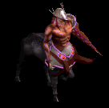 | 笛(300) | 槍(200) | 状態異常回復1(300) | 職業鎧(170) | 槍投擲機(150) | 宝石(120) | 箒(200) | ||
| ケンタウロスEx | 神獣 | セミ1 | |||||||
| 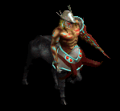 | 笛(450) | 槍(300) | 状態異常回復1(450) | 職業鎧(250) | 槍投擲機(230) | 宝石(180) | 箒(300) | ||
| ケンタウロス騎士Ex | 神獣 | セミ2 | |||||||
 | 笛(650) | 槍(430) | 状態異常回復1(650) | 職業鎧(360) | 槍投擲機(330) | 宝石(260) | 箒(430) | ||
| ダークエルフ王Ex | 神獣 | ボス2 | |||||||
 | 笛(2000) | 槍(1330) | 状態異常回復1(2000) | 職業鎧(1110) | 槍投擲機(1000) | 宝石(800) | 箒(1330) | ||
| スプクZin | アンデット | セミ1 | |||||||
| 投擲(650) | スリング(430) | 状態異常回復1(650) | 腰(360) | 爪(330) | 帰還(260) | |||
| デスピンサーZin | アンデット | ボス1 | |||||||
| 投擲(1000) | 牙(670) | 状態異常回復1(1000) | 鎧(560) | 爪(500) | 帰還(400) | 双剣(670) | ||
| ミイラZin | アンデット | 一般2 | |||||||
| 槍(1380) | 杖(920) | 状態異常回復1(1380) | 腰(770) | 手首(690) | 能力向上2(550) | 本(920) | 箒(1380) | |
| エンバームドZin | アンデット | 一般4 | |||||||
| 槍(1200) | 鞭(800) | 状態異常回復1(1200) | 腰(670) | 手首(600) | 能力向上2(480) | 箒(1200) | ||
| マミーZin | アンデット | セミ1 | |||||||
| 槍(650) | 杖(430) | 状態異常回復1(650) | 腰(360) | 手首(330) | 能力向上2(260) | 本(430) | 箒(650) | |
| マミーキングZin | アンデット | ボス1 | |||||||
| 槍(1000) | 鞭(670) | 状態異常回復1(1000) | 腰(560) | 手首(500) | 能力向上2(400) | 箒(1000) | |||
| レイスZin | アンデット | セミ2 | |||||||
| 杖(750) | 翼(500) | 状態異常回復1(750) | グローブ(420) | 冠(380) | 宝石(300) | 本(750) | 水晶(500) | |
| 原始人Zin | 人間 | 一般3 | |||||||
| 笛(1560) | 牙(1040) | 状態異常回復1(1560) | 足(870) | 槍投擲機(780) | 十字架(70) | 双剣(1040) | ||
| イーターZin | 人間 | セミ1 | |||||||
| 笛(650) | 牙(430) | 状態異常回復1(650) | グローブ(360) | 槍投擲機(330) | 十字架(80) | 双剣(430) | ||
| 呪術者Zin | 人間 | ボス1 | |||||||
| 笛(1000) | 牙(670) | 状態異常回復1(1000) | 足(560) | 槍投擲機(500) | 十字架(90) | 双剣(670) | |||
| 斧槍兵Zin | 人間 | 一般2 | |||||||
| 槍(1380) | 両手剣(920) | 状態異常回復1(1380) | 鎧(770) | 手首(690) | 十字架(120) | 鎌(920) | 箒(1380) | |
| アイウィングZin | 悪魔 | 一般3 | |||||||
| 笛(1560) | 翼(1040) | 状態異常回復1(1560) | 兜・帽子(870) | 冠(780) | 帰還(620) | 水晶(1040) | ||
| ドゥームスフィアZin | 悪魔 | 一般4 | |||||||
| 笛(1200) | 翼(800) | 状態異常回復1(1200) | 兜・帽子(670) | 首(600) | 帰還(480) | 水晶(800) | ||
| ビホルダーZin | 悪魔 | セミ2 | |||||||
| 投擲(750) | 翼(500) | 状態異常回復1(750) | 兜・帽子(420) | 冠(380) | 帰還(300) | 水晶(500) | ||
| ピエンドZin | 悪魔 | 一般1 | |||||||
| 鞭(1210) | 杖(810) | 状態異常回復1(1210) | 腰(670) | 指輪(610) | 十字架(180) | 本(810) | ||
| サタンZin | 悪魔 | ボス2 | |||||||
| 鞭(1100) | 杖(730) | 状態異常回復1(1100) | 腰(610) | 指輪(550) | 十字架(220) | 本(730) | ||
| オーガチーフZin | 悪魔 | セミ1 | |||||||
| 鈍器(650) | 杖(430) | 状態異常回復1(650) | 鎧(360) | イヤリング(330) | 能力向上1(260) | 本(430) | ||
| ビッグクラブZin | 動物 | 一般2 | |||||||
| 投擲(1380) | 両手剣(920) | 状態異常回復1(1380) | 足(770) | 指輪(690) | 能力向上2(550) | 鎌(920) | ||
| キングクラブZin | 動物 | セミ1 | |||||||
| 投擲(650) | 両手剣(430) | 状態異常回復1(650) | 足(360) | 指輪(330) | 帰還(260) | 鎌(430) | ||
| キャンサーZin | 動物 | ボス1 | |||||||
| 投擲(1000) | 両手剣(670) | 状態異常回復1(1000) | 腰(560) | 爪(500) | 宝石(400) | 鎌(670) | ||
| ウルフZin | 動物 | 一般3 | |||||||
| 牙(1560) | 弓(1040) | 状態異常回復1(1560) | マント(870) | 槍投擲機(780) | 特殊1(620) | 双剣(1560) | 銃(1040) | |
| ブラックベアーZin | 動物 | 一般3 | |||||||
| 牙(1560) | 鞭(1040) | 状態異常回復1(1560) | グローブ(870) | 爪(780) | 宝石(620) | 双剣(1560) | |||
| パンZin | 神獣 | 一般1 | |||||||
| 笛(1210) | 槍(810) | 状態異常回復1(1210) | 職業鎧(670) | 槍投擲機(610) | 宝石(480) | 箒(810) | ||
| サティロスZin | 神獣 | 一般4 | |||||||
| 笛(1200) | 槍(800) | 状態異常回復1(1200) | 職業鎧(670) | 槍投擲機(600) | 宝石(480) | 箒(800) | |||
| ケンタウロスZin | 神獣 | セミ1 | |||||||
| 笛(650) | 槍(430) | 状態異常回復1(650) | 職業鎧(360) | 槍投擲機(330) | 宝石(260) | 箒(430) | |||
| ケンタウロス騎士Zin | 神獣 | セミ2 | |||||||
| 笛(750) | 槍(500) | 状態異常回復1(750) | 職業鎧(420) | 槍投擲機(380) | 宝石(300) | 箒(500) | ||
| ケンタウロス王Zin | 神獣 | ボス2 | |||||||
| 笛(1100) | 槍(730) | 状態異常回復1(1100) | 職業鎧(610) | 槍投擲機(550) | 宝石(440) | 箒(730) | ||
| ジャイアント骸骨1 Zin | アンデット | セミ1 | |||||||
 | 冠(50) | 鈍器(90) | 牙(160) | 職業鎧(230) | 状態異常回復1(300) | 杖(350) | 本(350) | 双剣(160) | |
| バイキングヘッド Zin | アンデット | 一般4 | |||||||
| 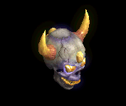 | 鍵(30) | 鈍器(50) | 牙(90) | 職業鎧(130) | 状態異常回復1(170) | イベント(200) | 双剣(90) | ||
| デスマスク3 Zin | アンデット | ボス2 | |||||||
 | 鍵(270) | 状態異常回復2(450) | 十字架(810) | 職業鎧(1170) | 状態異常回復1(1530) | HP回復(1800) | |||
| アンデッド魔法師3 Zin | アンデット | セミ2 | |||||||
 | 能力向上2(80) | マント(140) | CP回復(250) | 十字架(360) | 状態異常回復1(470) | イベント(550) | |||
| アンデッドライト Zin | アンデット | 一般4 | |||||||
 | 指輪(30) | マント(50) | 弾(90) | 手首(130) | 状態異常回復1(170) | 宝石(200) | |||
| アンデッドメイジ1 Zin | アンデット | セミ2 | |||||||
 | 指輪(80) | マント(140) | 腕刺青(250) | 十字架(360) | 状態異常回復1(470) | 宝石(550) | |||
| アンデッドロック2 Zin | アンデット | ボス1 | |||||||
| 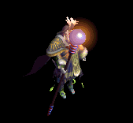 | 指輪(150) | マント(250) | 弾(450) | マント(650) | 状態異常回復1(850) | イベント(1000) | |||
| ボーンキメラZin | アンデット | 一般4 | |||||||
 | 片手剣(30) | 首(50) | 牙(90) | 職業鎧(130) | 状態異常回復1(170) | 兜・帽子(200) | クロー(30) | 双剣(90) | |
| ブルーエリゲイト3 Zin | アンデット | ボス2 | |||||||
 | 職業鎧(270) | 首(450) | 牙(810) | 十字架(1170) | 状態異常回復1(1530) | 兜・帽子(1800) | 双剣(810) | ||
| 装甲ボーンキメラ Zin | アンデット | 一般4 | |||||||
 | 片手剣(30) | 首(50) | 牙(90) | 職業鎧(130) | 状態異常回復1(170) | HP回復(200) | クロー(30) | 双剣(90) | |
| ハイエルフ3 Zin | 人間 | ボス1 | |||||||
 | 片手剣(250) | イヤリング(750) | 足(500) | 槍(400) | 状態異常回復1(100) | 杖(150) | クロー(250) | 本(150) | 箒(400) |
| エルフガーディア1 Zin | 人間 | セミ3 | |||||||
 | 片手剣(180) | ブローチ(530) | 帰還(350) | 槍(280) | 状態異常回復1(70) | 兜・帽子(110) | クロー(180) | 箒(280) | |
| ならず者1 Zin | 人間 | 一般4 | |||||||
 | 鍵(50) | 爪(150) | 牙(100) | 笛(80) | 状態異常回復1(20) | 盾(30) | 双剣(100) | ||
| ルーンファイター Zin | 人間 | セミ3 | |||||||
 | 両手剣(180) | 爪(530) | 牙(350) | 笛(280) | 状態異常回復1(70) | HP回復(110) | 鎌(180) | 双剣(350) | |
| シーク信者(踊り子)1 Zin | 人間 | セミ1 | |||||||
| 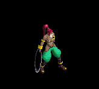 | 宝石(90) | 首(260) | スリング(180) | 手首(140) | 状態異常回復1(40) | CP回復(50) | |||
| シーク天使2 Zin | 人間 | セミ3 | |||||||
 | 鍵(180) | マント(530) | スリング(350) | 能力向上2(280) | 状態異常回復1(70) | イベント(110) | |||
| 逃亡魔法師1 Zin | 人間 | 一般4 | |||||||
 | 両手剣(50) | ブローチ(150) | CP回復(100) | 職業鎧(80) | 状態異常回復1(20) | 杖(30) | 鎌(50) | 本(30) | |
| 逃亡ハンター Zin | 人間 | 一般4 | |||||||
 | 投擲(50) | ブローチ(150) | 両手剣(100) | 能力向上1(80) | 状態異常回復1(20) | HP回復(30) | 鎌(100) | ||
| 狂魔(狂った悪魔…)1 Zin | 悪魔 | セミ1 | |||||||
| 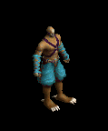 | 片手剣(230) | 爪(280) | 帰還(120) | 鞭(70) | 状態異常回復1(40) | 兜・帽子(20) | クロー(230) | ||
| ゴールデンマスク Zin | 悪魔 | 一般4 | |||||||
 | 片手剣(130) | ブローチ(160) | スリング(70) | 能力向上1(40) | 状態異常回復1(20) | 兜・帽子(10) | クロー(130) | ||
| 剣闘士1 Zin | 悪魔 | セミ2 | |||||||
 | 片手剣(360) | 爪(440) | スリング(180) | 鞭(110) | 状態異常回復1(60) | 兜・帽子(30) | クロー(360) | ||
| 剣闘士4 Zin | 悪魔 | ボス3 | |||||||
 | 能力向上2(1560) | 爪(1920) | スリング(790) | 十字架(480) | 状態異常回復1(240) | 兜・帽子(120) | |||
| 古代悪魔1 Zin | 悪魔 | セミ1 | |||||||
 | 鍵(230) | 首(280) | 両手剣(120) | 手首(70) | 状態異常回復1(40) | グローブ(20) | 鎌(120) | ||
| 古代悪魔4 Zin | 悪魔 | ボス3 | |||||||
 | 指輪(1560) | 状態異常回復2(1920) | 両手剣(790) | 手首(480) | 状態異常回復1(240) | グローブ(120) | 鎌(790) | ||
| 死神1 Zin | 悪魔 | セミ1 | |||||||
| 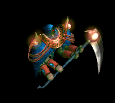 | 指輪(230) | ブローチ(280) | 十字架(120) | 十字架(70) | 状態異常回復1(40) | グローブ(20) | |||
| 邪臣1 Zin | 悪魔 | セミ2 | |||||||
| 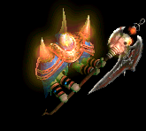 | 指輪(360) | 首(440) | 両手剣(180) | 能力向上1(110) | 状態異常回復1(60) | 杖(30) | 鎌(180) | 本(30) | |
| 魔女2 Zin | 悪魔 | ボス1 | |||||||
 | 鍵(650) | イヤリング(800) | 腕刺青(330) | 笛(200) | 状態異常回復1(100) | 盾(50) | |||
| 魔女4 Zin | 悪魔 | ボス3 | |||||||
 | 鎧(1560) | イヤリング(1920) | 帰還(790) | 笛(480) | 状態異常回復1(240) | HP回復(120) | |||
| サキュバス2 Zin | 悪魔 | セミ3 | |||||||
 | 鍵(460) | イヤリング(560) | 腕刺青(230) | 笛(140) | 状態異常回復1(70) | 盾(40) | |||
| パンタズドリーム2 Zin | 悪魔 | セミ3 | |||||||
 | 鎧(460) | イヤリング(560) | 足(230) | 笛(140) | 状態異常回復1(70) | イベント(40) | |||
| パンタズドリーム4 Zin | 悪魔 | ボス3 | |||||||
 | 鎧(1560) | イヤリング(1920) | 足(790) | 笛(480) | 状態異常回復1(240) | 盾(120) | |||
| カマキリ戦士3 Zin | 悪魔 | ボス2 | |||||||
 | 両手剣(1170) | ブローチ(1440) | 腕刺青(590) | 槍(360) | 状態異常回復1(180) | HP回復(90) | 鎌(1170) | 箒(360) | |
| ペンティライダー Zin | 悪魔 | セミ1 | |||||||
| 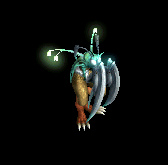 | 鍵(230) | 弾(280) | 腕刺青(120) | 槍(70) | 状態異常回復1(40) | 翼(20) | 箒(70) | 水晶(20) | |
| バッタ悪魔1 Zin | 悪魔 | セミ1 | |||||||
 | 能力向上2(230) | CP回復(280) | 弾(120) | 槍(70) | 状態異常回復1(40) | 翼(20) | 箒(70) | 水晶(20) | |
| パンプキンヘッド1 Zin | 悪魔 | セミ1 | |||||||
 | 指輪(230) | 首(280) | マント(120) | 笛(70) | 状態異常回復1(40) | イベント(20) | |||
| ジャックランタン Zin | 悪魔 | セミ1 | |||||||
| 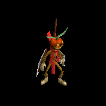 | 鍵(230) | 首(280) | 足(120) | 笛(70) | 状態異常回復1(40) | イベント(20) | |||
| エルダーパンプキン1 Zin | 悪魔 | セミ3 | |||||||
 | 鍵(460) | 首(560) | 足(230) | 笛(140) | 状態異常回復1(70) | グローブ(40) | |||
| ビッグモンキー1 Zin | 動物 | セミ1 | |||||||
 | 能力向上2(120) | ブローチ(90) | 腕刺青(70) | 職業鎧(50) | 状態異常回復1(40) | イベント(20) | |||
| マウンテン戦士2 Zin | 動物 | セミ3 | |||||||
 | 冠(250) | ブローチ(180) | 宝石(140) | 職業鎧(110) | 状態異常回復1(70) | 翼(40) | 水晶(40) | ||
| ラジエータカエル2 Zin | 動物 | ボス1 | |||||||
 | 投擲(350) | 爪(250) | 弾(200) | 十字架(150) | 状態異常回復1(100) | イベント(50) | |||
| 赤パネルバッファ4 Zin | 神獣 | ボス3 | |||||||
 | 指輪(1080) | 爪(1560) | 帰還(840) | 鞭(120) | 状態異常回復1(240) | 兜・帽子(600) | |||
| 使徒4 Zin | 神獣 | ボス3 | |||||||
 | 鎧(1080) | ブローチ(1560) | スリング(840) | 笛(120) | 状態異常回復1(240) | 盾(600) | |||
| ウィークネス天使 Zin | 神獣 | セミ1 | |||||||
 | 鎧(160) | 鈍器(230) | スリング(120) | 笛(20) | 状態異常回復1(40) | 盾(90) | |||
| ウィークネス天使2 Zin | 神獣 | セミ3 | |||||||
 | 鎧(320) | 鈍器(460) | 腕刺青(250) | 十字架(40) | 状態異常回復1(70) | 盾(180) | |||
| 堕天使 Zin | 神獣 | 一般3 | |||||||
 | 投擲(120) | ブローチ(170) | 帰還(90) | 能力向上1(10) | 状態異常回復1(30) | HP回復(70) | |||
| 番人 | 悪魔 | 一般3 | |||||||
| 笛(360) | 翼(240) | 状態異常回復1(360) | 兜・帽子(200) | 冠(180) | 帰還(140) | 水晶(240) | ||
| 監視者 | 悪魔 | 一般4 | |||||||
| 笛(300) | 翼(200) | 状態異常回復1(300) | 兜・帽子(170) | 首(150) | 帰還(120) | 水晶(200) | ||
| 見識者 | 悪魔 | セミ2 | |||||||
| 投擲(420) | 翼(280) | 状態異常回復1(420) | 兜・帽子(230) | 冠(210) | 帰還(170) | 水晶(280) | ||
| 見張り Ex | 悪魔 | 一般3 | |||||||
| 笛(360) | 翼(240) | 状態異常回復1(360) | 兜・帽子(200) | 冠(180) | 帰還(140) | 水晶(240) | ||
| 監視者 Ex | 悪魔 | 一般4 | |||||||
| 笛(300) | 翼(200) | 状態異常回復1(300) | 兜・帽子(170) | 首(150) | 帰還(120) | 水晶(200) | ||
| 見識者 Ex | 悪魔 | セミ2 | |||||||
| 投擲(650) | 翼(430) | 状態異常回復1(650) | 兜・帽子(360) | 冠(330) | 帰還(260) | 水晶(430) | ||
| ボーンドラゴン Zin | アンデット | 一般4 | |||||||
| 片手剣(30) | 首(50) | 牙(90) | 職業鎧(130) | 状態異常回復1(170) | 兜・帽子(200) | クロー(30) | 双剣(90) | |
| 森の守り人 Zin | 悪魔 | セミ2 | |||||||
| 投擲(750) | 翼(500) | 状態異常回復1(750) | 兜・帽子(420) | 冠(380) | 帰還(300) | 水晶(500) | ||
| ボーンドラゴン Zin | アンデット | 一般4 | |||||||
| 片手剣(30) | 首(50) | 牙(90) | 職業鎧(130) | 状態異常回復1(170) | 兜・帽子(200) | クロー(30) | 双剣(90) | |
| フィクサー Zin | 悪魔 | ボス3 | |||||||
| 鎧(1560) | イヤリング(1920) | 足(790) | 笛(480) | 状態異常回復1(240) | 盾(120) | |||
| 原始人Ev | 人間 | 一般3 | |||||||
| 笛(1560) | 牙(1040) | 状態異常回復1(1560) | 足(870) | 槍投擲機(780) | 十字架(70) | 双剣(1040) | ||
| ブラックベアーEv | 動物 | 一般3 | |||||||
| 牙(1560) | 鞭(1040) | 状態異常回復1(1560) | グローブ(870) | 爪(780) | 宝石(620) | 双剣(1560) | |||
| ウルフEv | 動物 | 一般3 | |||||||
| 牙(1560) | 弓(1040) | 状態異常回復1(1560) | マント(870) | 槍投擲機(780) | 特殊1(620) | 双剣(1560) | 銃(1040) | |
| アイウィングEv | 悪魔 | 一般3 | |||||||
| 笛(1560) | 翼(1040) | 状態異常回復1(1560) | 兜・帽子(870) | 冠(780) | 帰還(620) | 水晶(1040) | ||
| ドゥームスフィアEv | 悪魔 | 一般4 | |||||||
| 笛(1200) | 翼(800) | 状態異常回復1(1200) | 兜・帽子(670) | 首(600) | 帰還(480) | 水晶(800) | ||
| サティロスEv | 神獣 | 一般4 | |||||||
| 笛(1200) | 槍(800) | 状態異常回復1(1200) | 職業鎧(670) | 槍投擲機(600) | 宝石(480) | 箒(800) | |||
| エンバームドEv | アンデット | 一般4 | |||||||
| 槍(1200) | 鞭(800) | 状態異常回復1(1200) | 腰(670) | 手首(600) | 能力向上2(480) | 箒(1200) | ||
| エルフガーディアEv | 人間 | セミ3 | |||||||
| 片手剣(180) | ブローチ(530) | 帰還(350) | 槍(280) | 状態異常回復1(70) | 兜・帽子(110) | クロー(180) | 箒(280) | |
| 斧槍兵Sp | 人間 | 一般4 | |||||||
 | 槍(1400) | 両手剣(900) | 状態異常回復1(1400) | 鎧(800) | 手首(700) | 十字架(100) | 鎌(900) | 箒(1400) | |
| 狂魔Sp | 悪魔 | セミ1 | |||||||
| 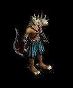 | 片手剣(600) | 爪(700) | スリング(200) | 翼(1100) | 状態異常回復1(100) | 兜・帽子(200) | クロー(400) | 水晶(1100) | |
| 赤パネルバッファ4 Sp | 神獣 | 一般4 | |||||||
 | 指輪(1100) | 爪(1500) | 帰還(800) | 鞭(200) | 状態異常回復1(300) | 兜・帽子(600) | |||
| 堕天使Sp | 神獣 | セミ1 | |||||||
 | 投擲(600) | ブローチ(800) | 帰還(300) | 能力向上1(300) | 状態異常回復1(300) | HP回復(300) | |||
| 狂魔2 Sp | 悪魔 | セミ1 | |||||||
 | 片手剣(600) | 爪(700) | スリング(200) | 翼(1100) | 状態異常回復1(100) | 兜・帽子(200) | クロー(400) | 水晶(1100) | |
| テンプラーSp | 人間 | 一般4 | |||||||
 | 槍(1400) | 両手剣(900) | 状態異常回復1(1400) | 鎧(800) | 手首(700) | 十字架(100) | 鎌(900) | 箒(1400) | |
| ピエンドSp | 悪魔 | 一般4 | |||||||
| 鞭(1200) | 杖(800) | 状態異常回復1(1200) | 腰(700) | 指輪(600) | 十字架(200) | 本(800) | ||
| サティロス Sp | 神獣 | 一般4 | |||||||
| 笛(1200) | 槍(800) | 状態異常回復1(1200) | 職業鎧(670) | 槍投擲機(600) | 宝石(480) | 箒(800) |